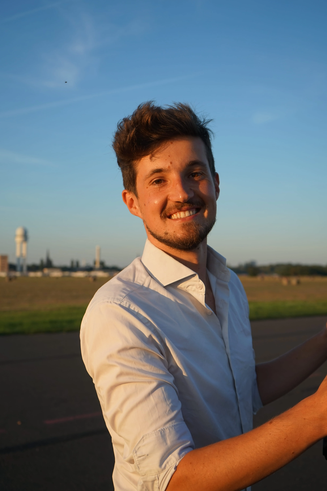
Über mich
Seit meinem Studium in Groningen in den Niederlanden bin ich von der „fahrradgerechten Stadt" fasziniert. Die einzigartige niederländische Fahrradkultur hat mich inspiriert auch in Deutschland die Vorstellungskraft der Menschen zu wecken und mit Bildern und Geschichten aufzuzeigen, wie eine Stadt, die nicht für Autos, sondern für Menschen gestaltet ist, aussehen könnte.
Dazu schreibe ich Artikel und Bücher, halte Vorträge und mache Filme über die vielen kleinen und großen Geschichten des Gelingens, die einen so wichtigen Beitrag zur ökologischen Transformation leisten. Denn am Ende geht es nicht ums Fahrrad allein. Es geht darum, eine lebenswerte, gerechte und nachhaltige Welt für alle Menschen zu schaffen.
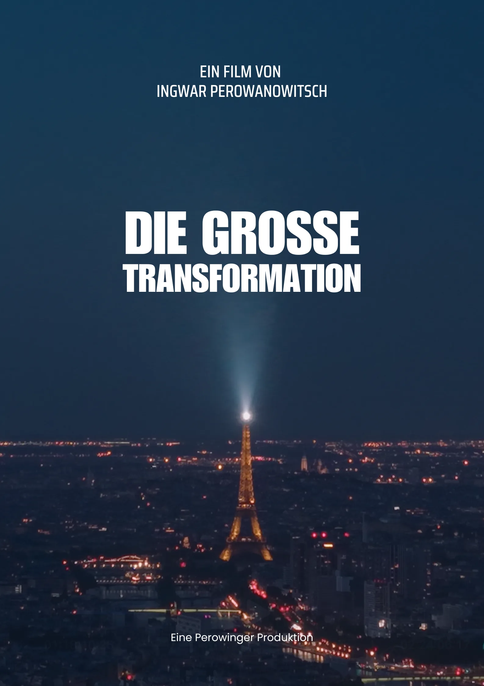
Filme
Die Große Transformation wird ein 90-minütiger Dokumentarfilm über den aktuellen Zustand der ökologischen Transformation in Deutschland und Europa. Zehn Jahre nach der Gründung von Fridays for Future geht der Film der Frage nach, wie der Weg zur Klimaneutralität bis zur Mitte des 21. Jahrhunderts gelingen kann. Für diesen Film reist der Filmemacher Ingwar Perowanowitsch quer durch Deutschland und Europa, besucht gelungene Projekte, die einen positiven Beitrag zur ökologischen Wende leisten und spricht mit Politikern, Aktivisten und Wissenschaftlern, die sich auf unterschiedlichste Weise auf lokaler, nationaler und internationaler Ebene für die Transformation einsetzen.
Dokumentarfilm · 2027 · 90 Minuten
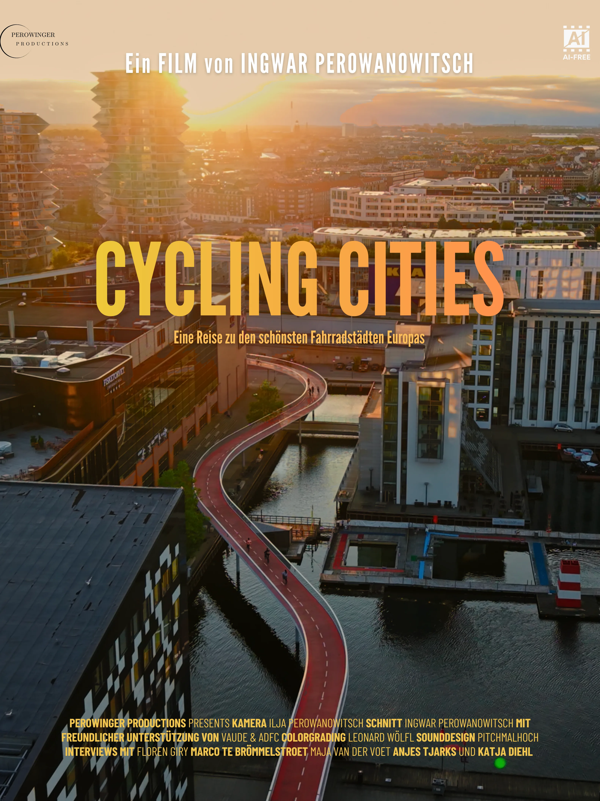
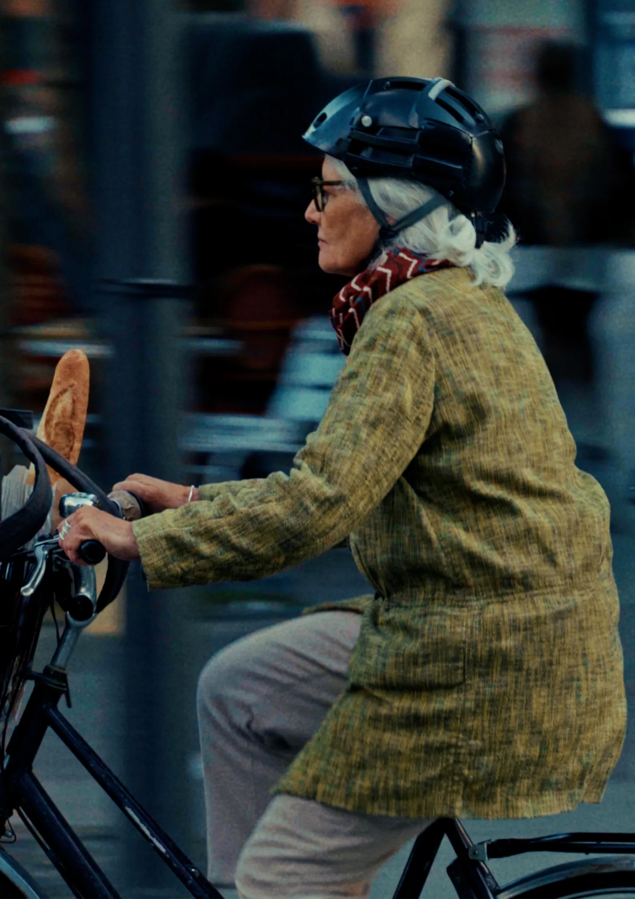
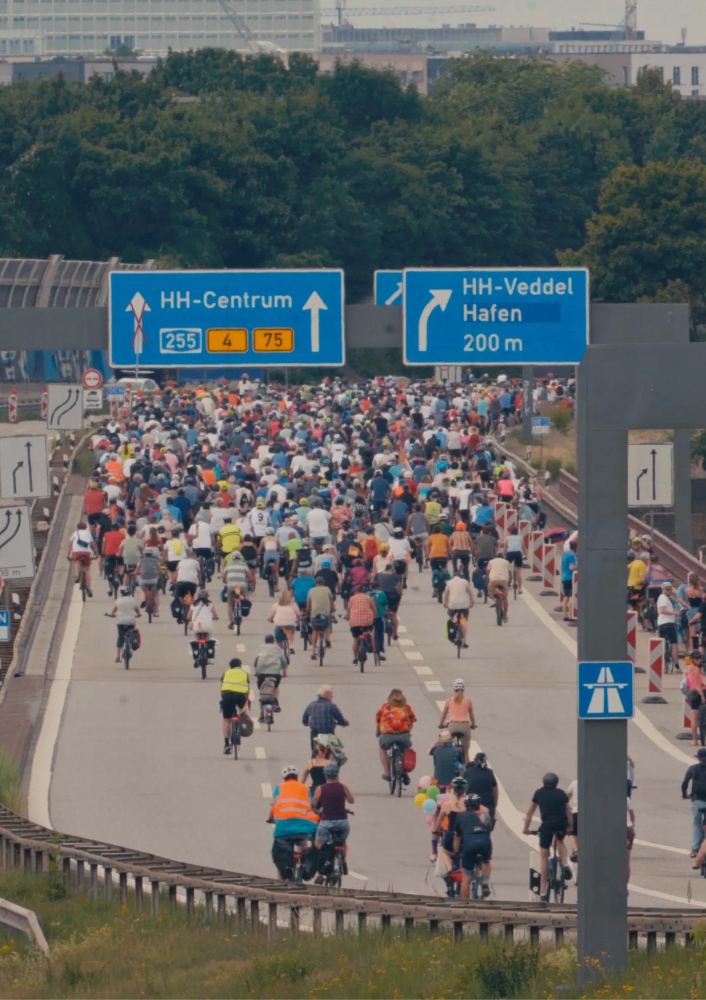
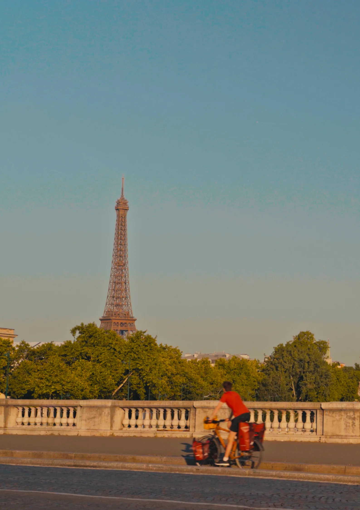

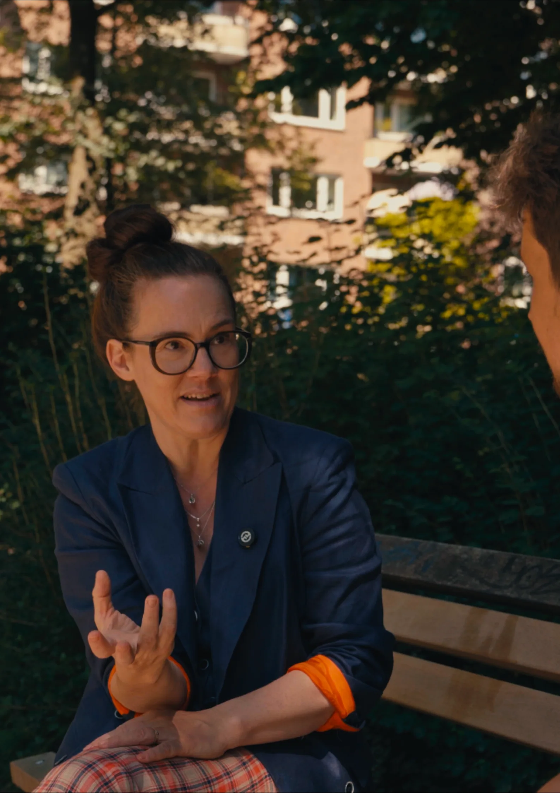
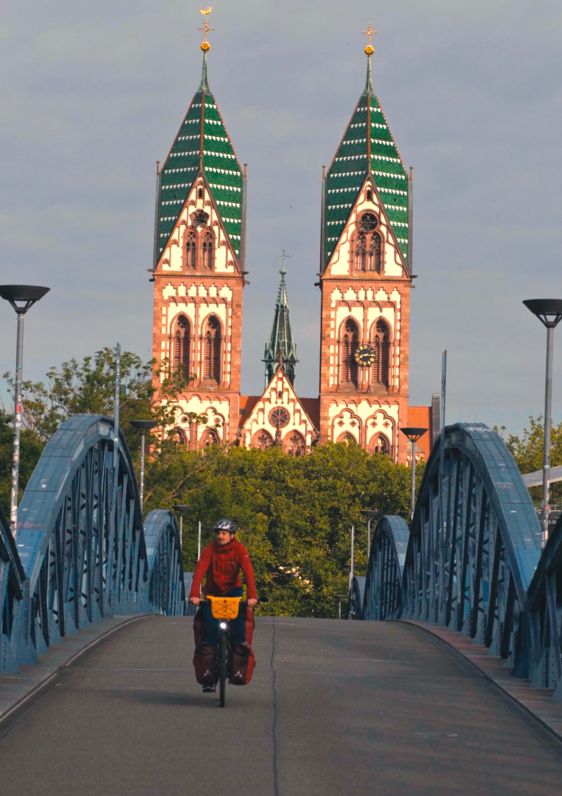

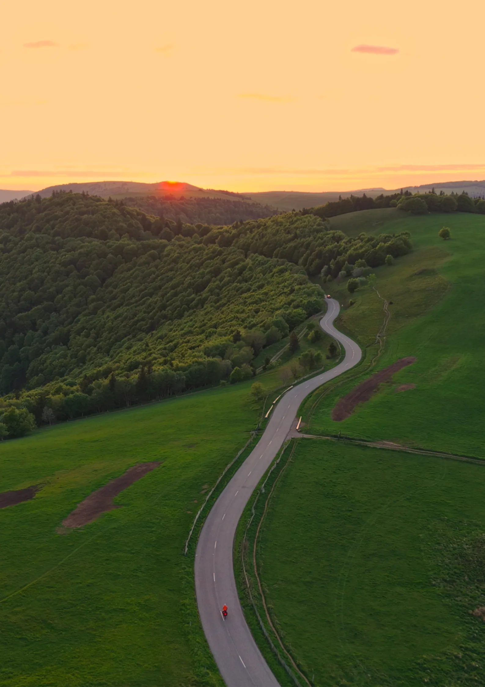
Filme
Im Mai 2025 bricht der Journalist und Filmemacher Ingwar Perowanowitsch auf eine Radreise zu den schönsten Fahrradstädten Europas auf. Sein Weg führt ihn von Freiburg nach Paris, über Gent, Amsterdam, Utrecht und Hamburg bis nach Kopenhagen. Er möchte wissen: Wie haben diese Städte die Verkehrswende geschafft und was können wir in Deutschland von ihnen lernen?
Perowanowitsch dokumentiert mit der Kamera, wie sich die Städte über die letzten Jahre und Jahrzehnte verändert haben, spricht vor Ort mit Politikern, Verkehrsplanern und Aktivisten und erzählt, welche Maßnahmen und Strategien am Ende zum Erfolg geführt haben. Entstanden ist dabei ein bildgewaltiger Film, der eine neue Geschichte der Mobilität erzählt. Ein Film, der inspiriert, zum Nachdenken anregt und dazu einlädt, unsere Städte von Grund auf neu zu denken.
Dokumentarfilm · 2025 · 84 Min.
Jetzt auf YouTube ansehen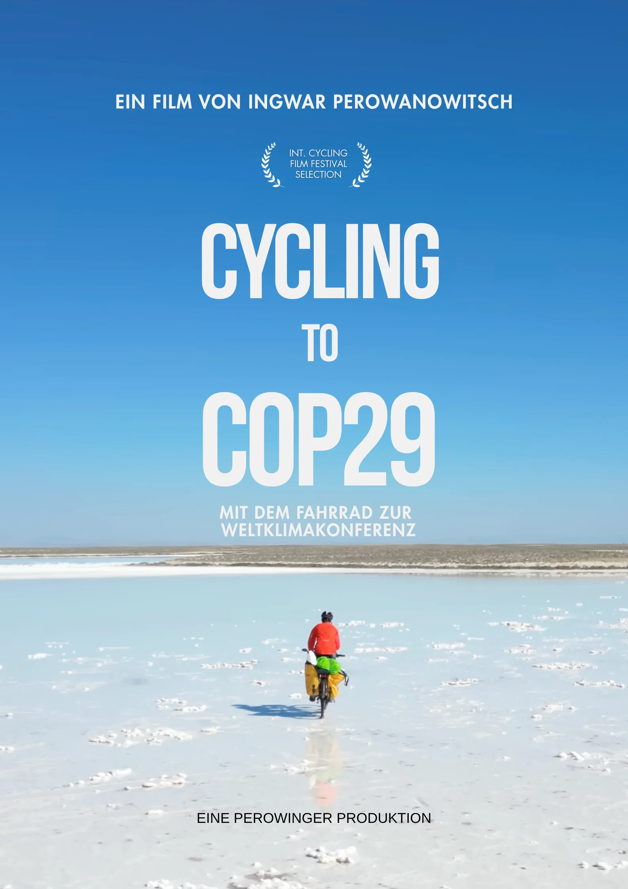
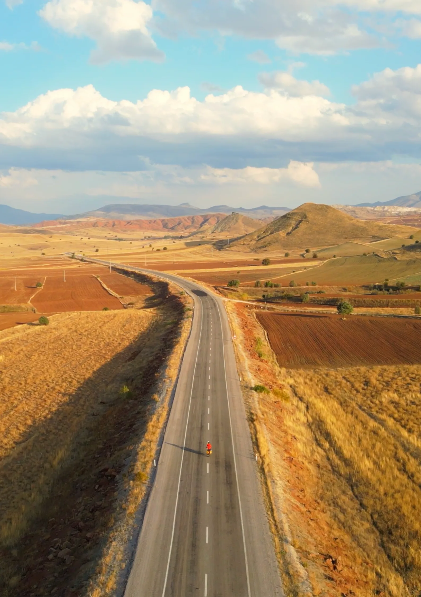
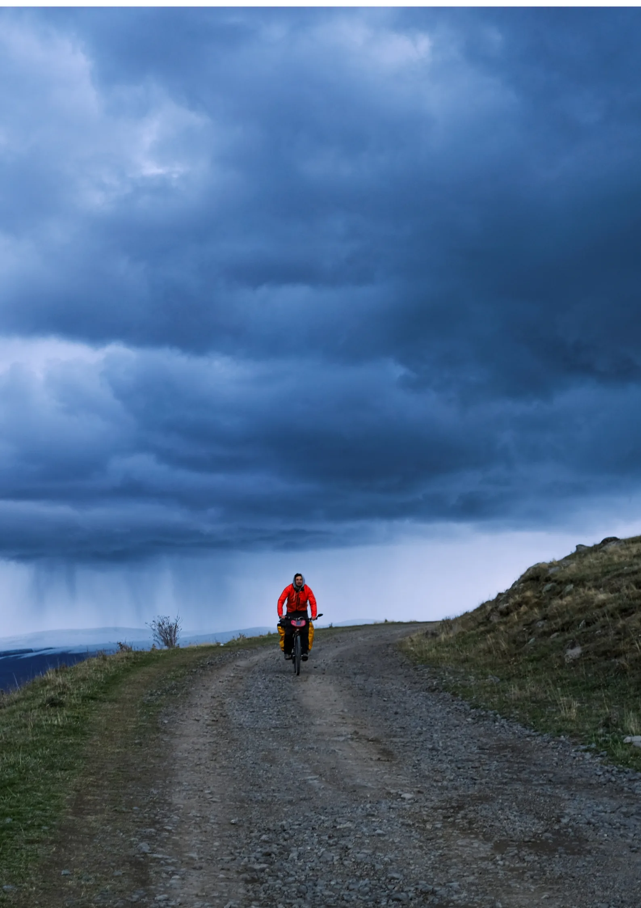
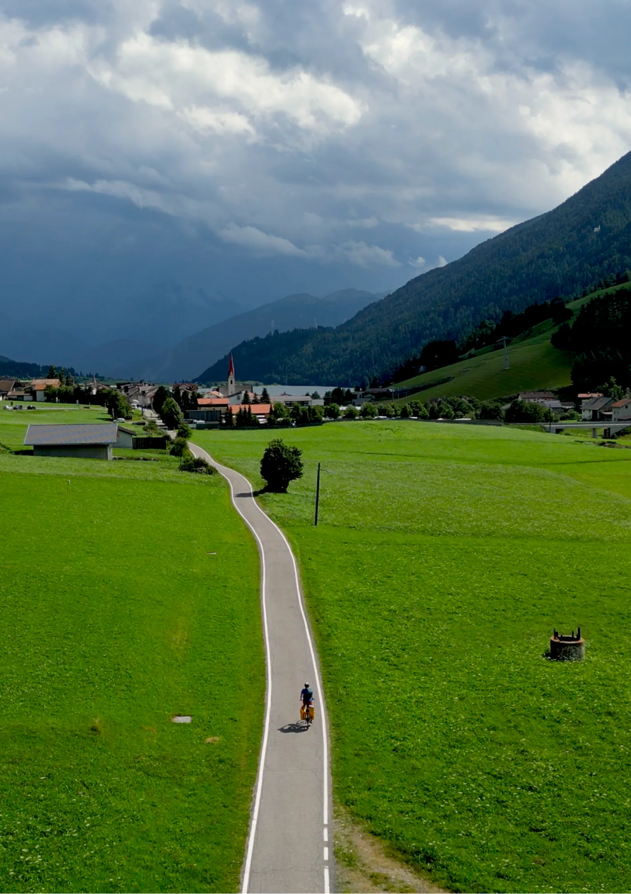
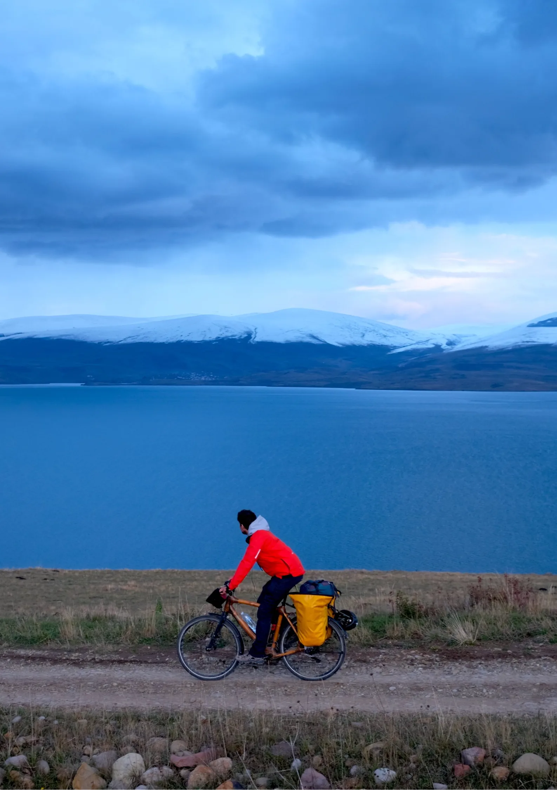
Filme
Im Sommer 2024 fährt der Filmemacher Ingwar Perowanowitsch von seiner Heimatstadt Freiburg mit dem Fahrrad los, um vier Monate später, von der 29. Weltklimakonferenz in Baku, in Aserbaidschan über die globale Klimapolitik zu berichten. Seine 5000 Kilometer lange Reise über die Alpen, durch den Balkan, die Türkei und den Kaukasus hält er mit der Kamera fest und lässt den Zuschauer an seinen Eindrücken, Begegnungen und Gedanken teilhaben.
Mit Cycling to COP29 ist Perowanowitsch eine faszinierende Dokumentation gelungen - über wunderschöne Landschaften, die Anstrengungen der Reise und die Gastfreundlichkeit der Menschen, die ihm entlang des Weges begegnen.
Dokumentarfilm · 2024 · 84 Minuten
Jetzt auf YouTube ansehenProduktionsfirma
Seit meiner Fahrradreise nach Baku habe ich das Filmemachen als neue persönliche Leidenschaft entdeckt. Ein kreatives Handwerk und ein tolles Medium, um inspirierende Geschichten des Gelingens zu erzählen. Mit meiner eigenen Filmproduktionsfirma Perowinger Productions erstelle ich Kurz- und Langfilme rund um die Themen Fahrradreisen, Mobilität und Klimawandel.
Meine bisherigen Filme Cycling to COP29 und Cycling Cities liefen bereits auf Kinofestivals, in über 50 Kinos in Deutschland, Schweiz und Österreich und wurden allein auf Youtube von über 280.000 Menschen gesehen.
Anfrage stellenPublikationen
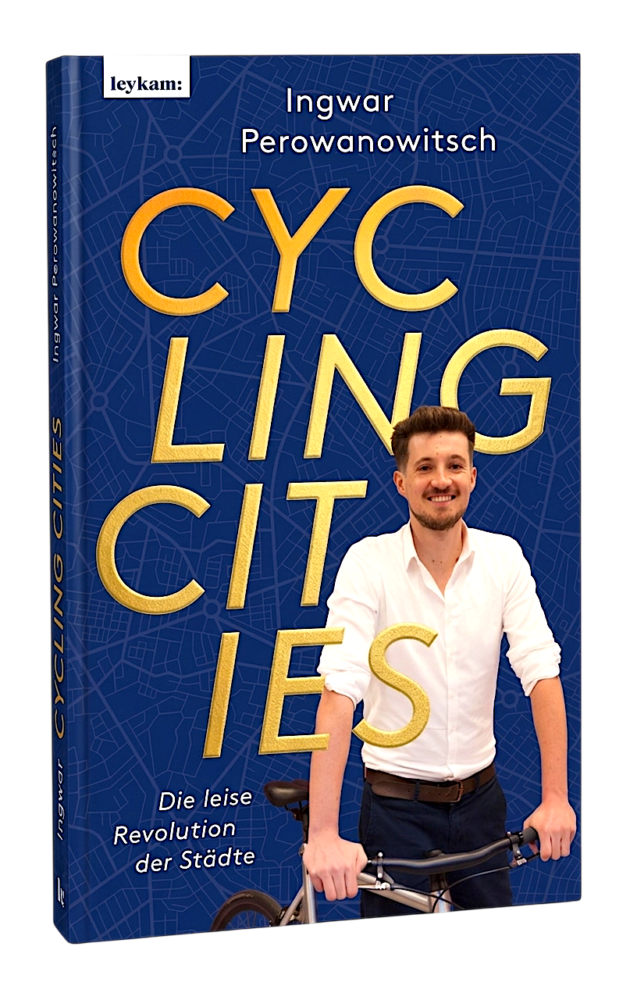
Jetzt signiertesDie leise Revolution der Städte
Mein allererstes Buch ist da! Ein Jahrzehnt nach meinem Erstkontakt mit einer Fahrradstadt ist dieses Buch eine Zusammenfassung meiner bisherigen Erkenntnisse. Es ist ein Rückblick, eine Bestandsaufnahme und ein Ausblick in die Zukunft. Ich möchte wissen: Was ist eigentlich das moralische Dilemma der autogerechten Stadt? Warum ist Deutschland so autozentriert? Warum ist das Fahrrad die Antwort auf all unsere ökologischen Probleme und wie wird die Verkehrswende in anderen europäischen Städten umgesetzt? Das Buch ist eine neue Geschichte des Fahrrads, es ist eine Reise zu den Schauplätzen der Verkehrswende und am Ende ist es auch eine ganz persönliche Liebeserklärung an ein wundervolles Verkehrsmittel, das uns seit über 200 Jahren begleitet und derzeit eine so schöne und kraftvolle Renaissance erlebt.
Ich hoffe sehr, dass euch das Buch gefällt. 🙏❤️
Sachbuch · September 2026

Der Bestseller aus den Niederlanden: Das große Buch über Verkehr, Mobilität und Gesellschaft von Radfahrprofessor Marco te Brömmelstroet und Journalistin Thalia Verkade. Mit einem Vorwort von Harald Welzer und einem Nachwort von Ingwar Perowanowitsch
Sachbuch · 2024

Beschreibungen und Illustrationen von Jakob Hinrichs über die vielfältigen Erscheinungsformen moderner Fahrradfahrer:innen. Mit einem Vorwort von Ingwar Perowanowitsch
Bildband · 2023
Keynotes & Vorträge
Seit 2023 habe ich über 100 Vorträge und Keynotes rund um die Themen „fahrradgerechte Städte" und Klimakrise vor Vereinen, Parteien, Unternehmen, auf Messen und Kongressen gehalten. Mit Bildern, Videos oder mit ganzen Filmen nehme ich die Menschen mit auf eine Reise zu den schönsten Fahrradstädten Europas. Ich erzähle die Geschichte, wie diese Städte die Verkehrswende geschafft haben und was wir in Deutschland von ihnen lernen können. Im Anschluss ergeben sich immer spannende Podiumsdiskussionen mit örtlichen Politikern und Experten oder interessante Publikumsgespräche.
Wenn Sie eine Veranstaltung oder eine Filmaufführung mit mir organisieren möchten, freue ich mich über jede Nachricht.
Anfrage stellenVeranstaltungen
Hier finden Sie eine Übersicht der kommenden Vorträge, Screenings und Veranstaltungen, bei denen Ingwar Perowanowitsch zu Gast ist.
Kontakt
Anfragen für Vorträge, Keynotes, Filmvorführungen etc.
✉ ingwarpero@posteo.netImpressum
Die Inhalte dieser Seiten wurden mit größter Sorgfalt erstellt. Für die Richtigkeit, Vollständigkeit und Aktualität der Inhalte kann jedoch keine Gewähr übernommen werden. Als Diensteanbieter bin ich gemäß § 7 Abs. 1 TMG für eigene Inhalte auf diesen Seiten nach den allgemeinen Gesetzen verantwortlich. Nach §§ 8 bis 10 TMG bin ich als Diensteanbieter jedoch nicht verpflichtet, übermittelte oder gespeicherte fremde Informationen zu überwachen.
Diese Website enthält Links zu externen Webseiten Dritter, auf deren Inhalte ich keinen Einfluss habe. Deshalb kann ich für diese fremden Inhalte keine Gewähr übernehmen. Für die Inhalte der verlinkten Seiten ist stets der jeweilige Anbieter oder Betreiber der Seiten verantwortlich. Die verlinkten Seiten wurden zum Zeitpunkt der Verlinkung auf mögliche Rechtsverstöße überprüft.
Ingwar Perowanowitsch
Postfach 12 03
79245 Merzhausen